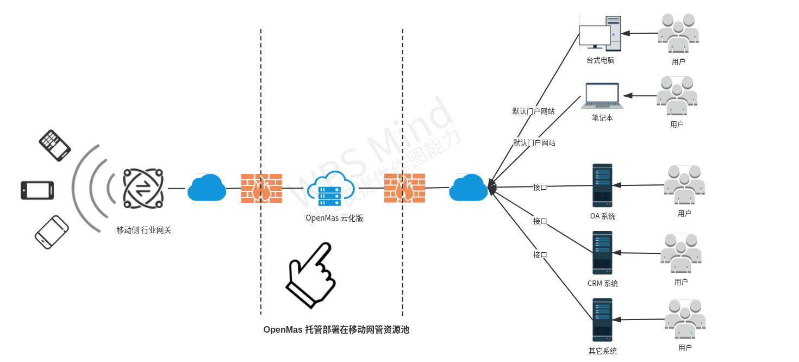
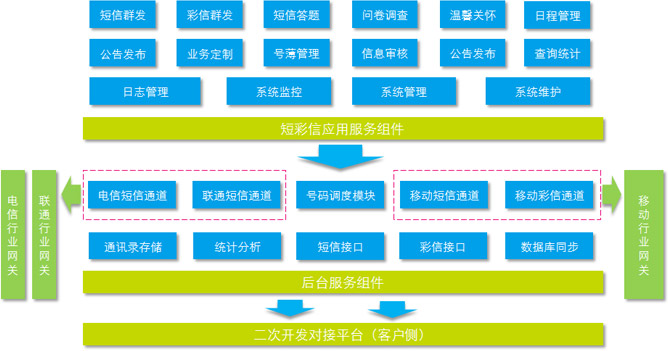

欢迎使用MAS信息机FAQ系统
产品定义
MAS英文全称为 Mobile Agent Server（移动代理服务器），MAS应用目前较多的为MAS企业信息机，主要为企业提供包括短信、彩信功能在内的多种移动信息化服务。
OpenMAS企业信息机是依托移动公司提供的企业专属服务器，通过直连行业网关的方式，以短信、彩信、WAP等实现集团与员工、客户（或服务对象）之间的信息实时交互，满足企业内部办公、外部营销宣传的信息化产品。

产品特点
OpenMAS作为浙江移动信息系统集成有限公司（以下简称：浙移集成）最新推出的具备模块化结构、开放式接口的软件产品，与其他同类的MAS产品相比有明显的优势，其功能特点主要如下：
- 开通快 ：云化部署，无需服务器，一次接入，降低客户IT系统复杂度;
- 托管式服务、运维难度小：客户不用单独为MAS机调配机房资源，降低实施难度；客户不用配备专人对系统进行日常维护，节约运维成本；
- 可靠性高：云化版系统采用负载均衡redis高可用主备方式，可靠性高;
数据隔离:云化版通过应用和数据分离，分库、分表等方式对集团客户的数据进行了有效的隔离，确保信息安全。
多样的通讯录管理：支持多种文件形式的数据导入方式，进行个人通讯录、企业通讯录、号码文件的灵活管理；
- 丰富的短彩信应用 ：短/彩信群发、问卷调查、短信答题、日程提醒、公告发布、温馨关怀；
- 方便的二次开发机制 ：提供多种二次开发策略，可以方便快速的将政企客户应用与企业信息机的短彩信应用相集成；
- 完备的信息安全方案 ：通过短信验证码使用鉴权以及多种信息审核途径，提供完备的信息安全机制。
产品介绍
| 适用企业 | 服务内容 | |
|---|---|---|
| OpenMAS云化版 | 多用户版的升级版 | 云化部署，无需服务器 基于移动短信协议提供短彩信群发应用及二次开发接口 |
| OpenMAS高端机 | 发送需求量大（短信日发送数量大于100万条），或有移动、电信、联通行业端口直发需求的政府及企业客户。 | 提供设备及软件部署; 实现移动/电信/联通三网短信协议、分级管理、大数据量发送等短彩信群发应用及二次开发接口 |
| OpenMAS多用户版 | 短信日发送量低于100万条且无设备内网对接需求的政府及企业客户。 | 设备托管在移动机房侧; 基于移动短信协议提供短彩信群发应用及二次开发接口 |
| OpenMAS单机版 | 短信日发送量低于100万条且存在设备内网对接需求的政府及企业客户。 | 提供设备及软件部署; 基于移动短信协议提供短彩信群发应用及二次开发接口 |
产品功能

产品性能
| 产品性能 | OpenMAS云化版 | OpenMAS高端机 | OpenMAS多用户版 | OpenMAS单机版 | ||
|---|---|---|---|---|---|---|
| 短信 | 最高发送速率 |
500条/秒 | 180条/秒 | 60条/秒 | ||
每日发送限额 |
/ | 400万条 | 100万条 | |||
每月发送限额 |
/ | / | 300万 | |||
web单次提交限额 |
5万条 | 10万条 | 10万条 | |||
二次开发单次提交限额 |
5万条 | 10万条 | 5万条 | |||
| 彩信 | 最高发送速率 |
/ | 5条/秒 | 2条/秒 | ||
每日发送限额 |
/ | 10万条 | 1万条 | |||
每月发送限额 |
/ | 50万 | 10万 | |||
web单次提交限额 |
/ | 1万条 | 0.5万条 | |||
二次开发单次提交限额 |
/ | 1万条 | 0.5万条 | |||
| 通讯录 | 通讯录一次导入条数 |
1万 | 1万 | |||
号码文件一次导入条数 |
5万 | 10万 | ||||
| 其他 | 硬件设备 |
云化部署，无需硬件 | 硬件设备 | 多企业共享 | 单独 | |
网络环境 |
公网或专网 | 公网或内网 | 公网 | 内网 | ||
服务热线
客服热线：400-10086-11客服邮箱：mas400@139.com